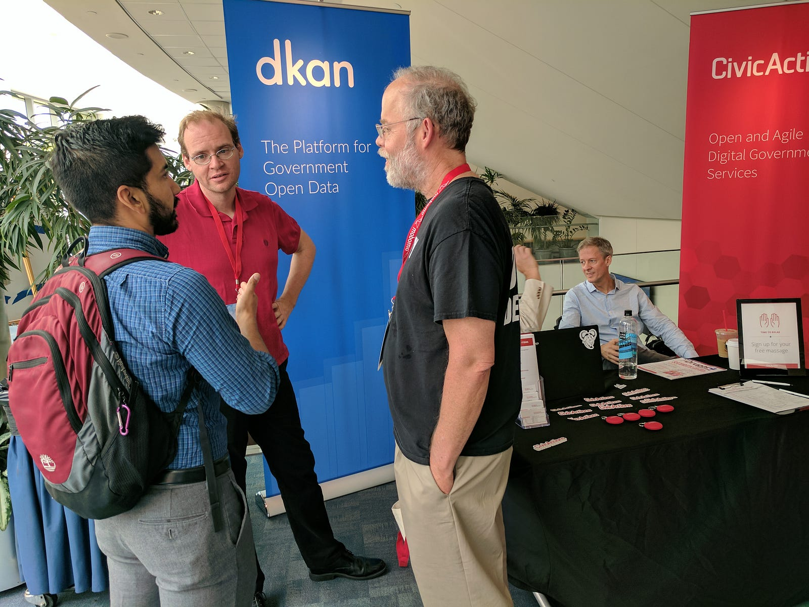
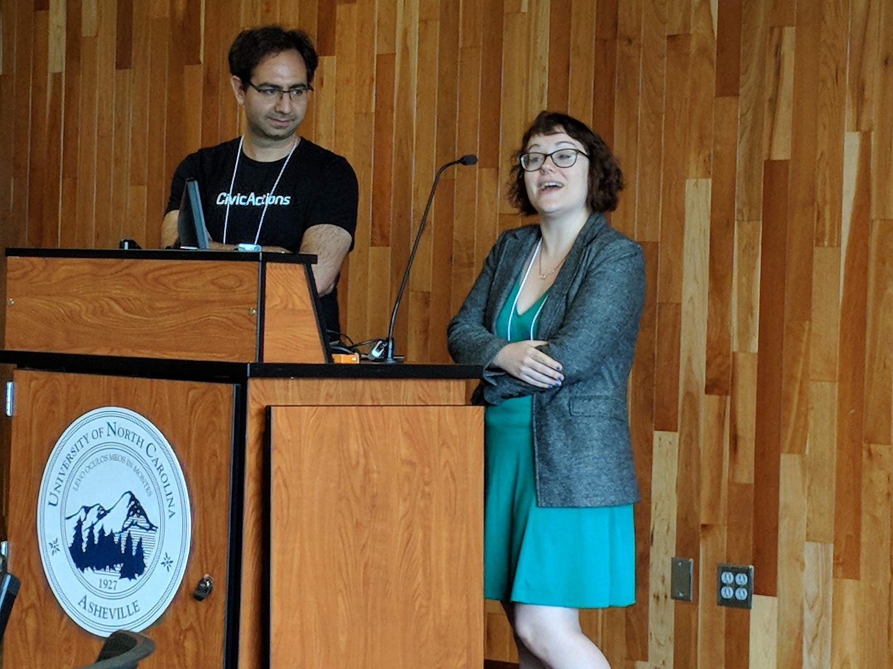
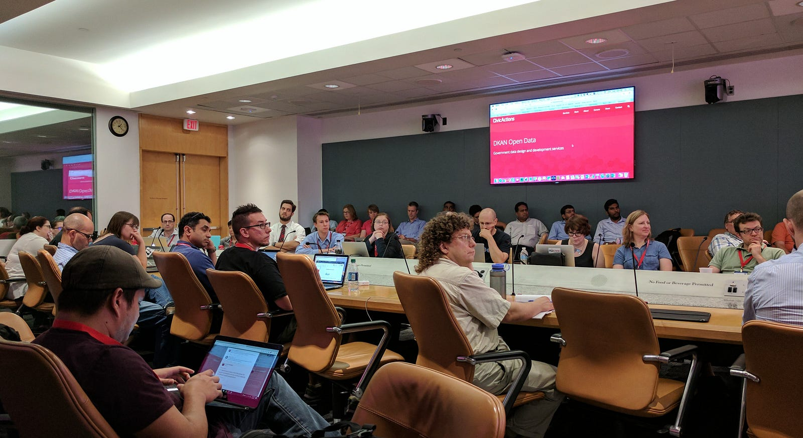
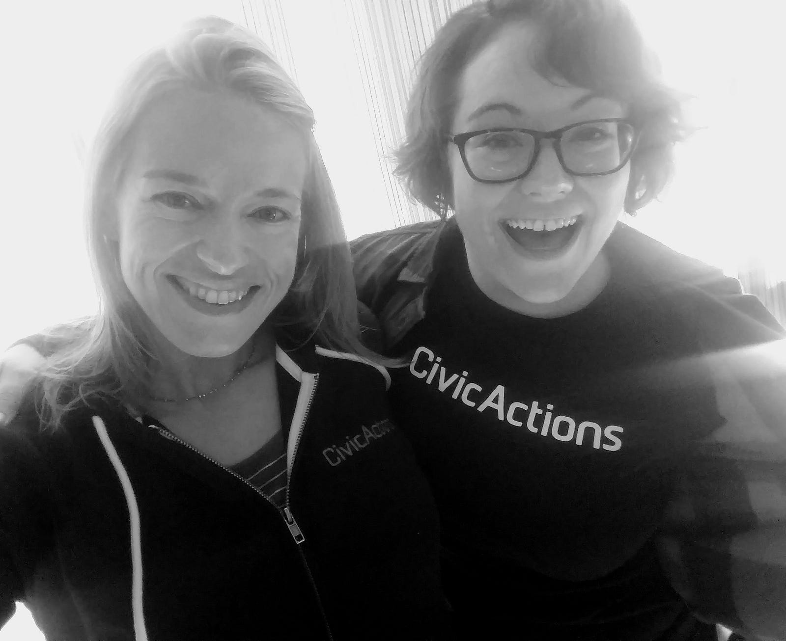
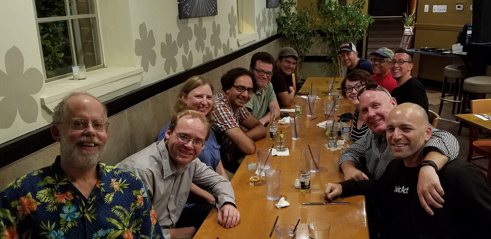

We are always thrilled to sponsor and participate at Drupal GovCon, and this year promises endless opportunities to connect, learn, and share with the Drupal community to support the broader digital government services movement.
CivicActions is sending a team of 11 friendly folks — and of course the ever-popular massage chair to help you relax and focus. (Stop by booth #3 to say hi and reserve your free massage!)
We can’t wait to see old friends and make new connections in the Drupal-verse, and we look forward to sharing the ways we’ve expanded our offerings to serve the public sector. We’re also hiring!
Presentations from CivicActions

Join the CivicActions team for conversations and presentations on agile, UX, DevOps, Drupal open data, and more!
The Useful Backlog and Other Mythical Creatures Is the backlog a useful tool for agile teams . . . or an impediment? Gerardo Gonzalez will ask some soul-searching questions and make you re-think the purpose and management of your backlog. Don’t miss this convo-sparking presentation! (Wednesday, 8/22 @ 9am)
Small Steps: Get Control of Your Technical Operations and Build a Healthy DevOps Culture The world of technical operations is more exciting than ever — but teams still struggle with changing code safely, scaling effectively, and recovering from disaster. Jeff Maher will share simple, tangible steps that help teams embrace DevOps culture. (Wednesday, 8/22 @ 2pm)
Component-driven Content Strategy for dea.gov and doctorswithoutborders.org Ever encountered “CMS bloat” — like a Drupal website with 3x the number of content types it needs, or a dozen taxonomy vocabularies that are rarely used? Jen Harris, Iris Ibekwe, and Kev Walsh will show how we helped DEA and Doctors Without Borders adopt elegant and flexible content models so they could reach their audiences more effectively. You’ll learn useful tips for a modular, component-driven approach. (Wednesday, 8/22 @ 3pm)
Designing Content for Drupal: Defining and Evaluating Site Structure with Confidence It doesn’t matter how great your content is if your users can’t find it! Jen Harris will draw from her experience designing Drupal platforms for governments and nonprofits to provide simple yet powerful tips on user-centered Information Architecture. (Friday, 8/24 @ 9am)
How Drupal Can (And Is) Powering Government Open Data Efforts The open source platform DKAN has made Drupal a leader in powering government open data platforms worldwide. Stefanie Gray will show how DKAN is being used to track school performance, reduce veteran suicide rates, help scientists share their research, and much more.
Join us at the DKAN Open Data Summit

On the first day of Drupal GovCon, open data leaders and enthusiasts will gather to talk about how the DKAN open data platform is helping governments use their data for good during the 2018 DKAN Open Data Summit.
DKAN is built on Drupal and helps organizations around the world publish their data in useful, interesting ways. Researchers, entrepreneurs, and the public are using this data to solve problems, create tools, and share discoveries.
The DKAN Summit is your once-a-year chance to dig into open data topics with the builders and maintainers of DKAN, as well as the folks who are successfully using it to power their open data efforts.
Won’t you join us?
Register (FREE)
What makes you excited about this year’s GovCon?

“Meeting more of my CivicActions teammates in person! (#RemoteLife)” Jeff Maher, Engineer
“Connecting with people in the GIS community who are using maps and data to make exciting improvements in the world.” Stefanie Gray, Open Data Specialist
“Re-connecting with Drupal folks and learning more about component-based development.” Iris Ibekwe, Engineer
“Giving a presentation that is deeply important to me, and somewhat controversial — I’m hoping it sparks a lot of interesting conversations.” Gerardo Gonzalez, Engineer
Stay in touch
Connect and follow along with us throughout Drupal GovCon!
- Drupal GovCon: @drupalgovcon / #DrupalGovCon
- CivicActions: @CivicActions
- DKAN: @getDKAN / #dkansummit / #opendata

See you next week in Bethesda!